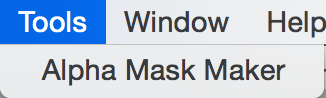
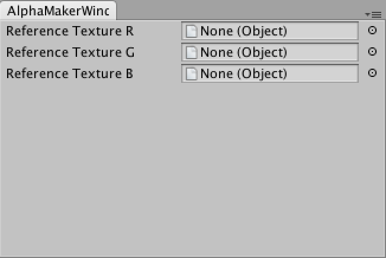
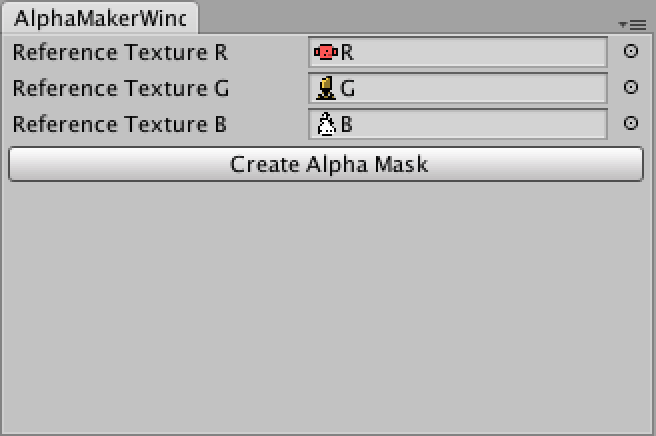
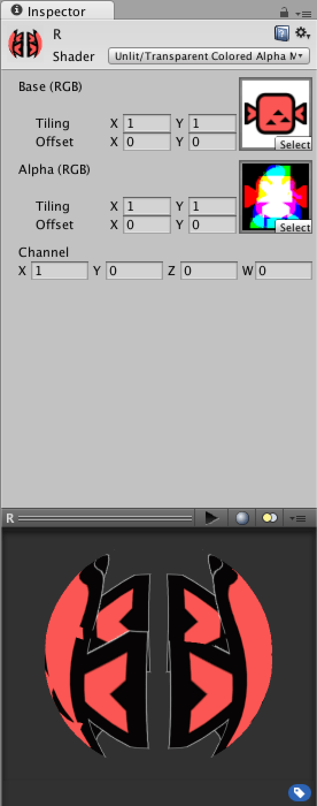
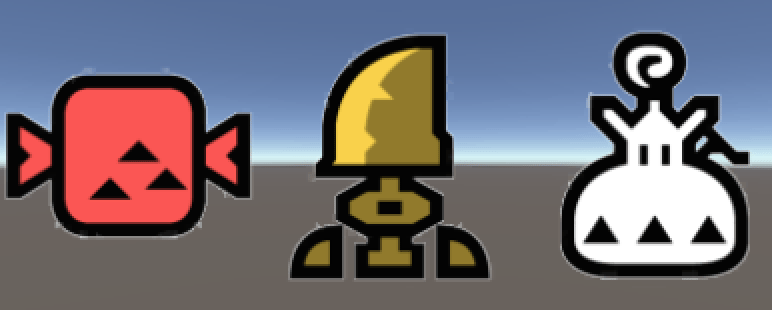

在貼圖中有常見的兩種格式
PNG：使用 RGBA 四個通道
JPG：使用 RGB 三個通道
當我們需要使用到透明圖層時就必須使用 A 通道
而 Alpha Mask 的主要功用
就是利用了圖片的 RGB 三個通道
來作為額外的遮罩圖層
將原本三張 PNG 變換為四張 JPG
使 JPG 也可以達到 PNG 的效果
製作原理
讀取一至三張不同的 PNG 圖片
擷取各自的像素產生出對應的 R、G、B 通道後
將三個通道合併成 Alpha Mask
接著則需要利用 Shader 來使用 Alpha Mask 作為遮罩參考來源
賦予相對應的 JPG、Alpha Mask 及 Channel
如此就能夠利用 JPG 來達到 PNG 的效果
製作流程
這裏的範例中使用了 R、G、B 三張不同的 PNG
PS 1：範例中的 JPG 並不是自動產生的，需要另外對 PNG 做處理
PS 2：在使用工具前，必須先勾選 Texture 設定中的 Read/Write Enabled
PS 3：打包圖檔的長寬必須一致
1.點選 Tools/Alpha Mask Maker

2.賦予對應的貼圖素材

3.點選 Create Alpha Mask 按鈕，並選擇儲存路徑產生出 Alpha Mask

4.生成 Alpha Masked 材質球並做相對應設定
Base：賦予 JPG 圖片
Alpha：賦予 Alpha Mask 圖片
Channel：選擇使用的通道

5.完成利用JPG來達到PNG效果

工具程式碼
using UnityEngine;
using UnityEditor;
using System.Collections;
using System.IO;
public class AlphaMaskWindow : EditorWindow
{
private Texture2D m_textureR;
private Texture2D m_textureG;
private Texture2D m_textureB;
private int m_arrayLength;
private int m_width;
private int m_height;
private Texture2D m_alphaMask;
[MenuItem("Tools/Alpha Mask Maker")]
private static void OpenWindow()
{
EditorWindow.GetWindow<AlphaMaskWindow> ().Show ();
}
void OnGUI()
{
GUILayout.BeginVertical ();
m_textureR = EditorGUILayout.ObjectField("Reference Texture R", m_textureR,typeof(object), false)asTexture2D;
m_textureG = EditorGUILayout.ObjectField("Reference Texture G", m_textureG,typeof(object), false)asTexture2D;
m_textureB = EditorGUILayout.ObjectField("Reference Texture B", m_textureB,typeof(object), false)asTexture2D;
if (m_textureR != null || m_textureG != null || m_textureB != null)
{
if(CheckSize())
DisplayButtons();
else
EditorGUILayout.LabelField("Textures should have the same size.");
}
EditorGUILayout.EndVertical ();
}
private void DisplayButtons()
{
if (GUILayout.Button ("Create Alpha Mask"))
CreateAlphaMask ();
}
private void CreateAlphaMask()
{
m_alphaMask = null;
m_arrayLength = 0;
Initialize (m_textureR);
Initialize (m_textureG);
Initialize (m_textureB);
Color[] channelR = GetChannel (m_textureR, Color.red);
Color[] channelG = GetChannel (m_textureG, Color.green);
Color[] channelB = GetChannel (m_textureB, Color.blue);
Color[] finalColor = new Color[m_arrayLength];
for(int cnt = 0; cnt < finalColor.Length; cnt++)
{
finalColor[cnt] = new Color(channelR[cnt].r, channelG[cnt].g, channelB[cnt].b);
}
m_alphaMask.SetPixels (0, 0, m_width, m_height, finalColor);
SaveAlphaMask ();
}
private void Initialize(Texture2D texture)
{
if (m_alphaMask != null)
return;
if (texture != null)
{
m_arrayLength = texture.GetPixels().Length;
m_alphaMask = new Texture2D (texture.width, texture.height, TextureFormat.RGBA32, false);
}
}
private Color[] GetChannel(Texture2D texture, Color color)
{
Color[] channel = new Color[m_arrayLength];
if(texture != null)
{
channel = texture.GetPixels();
for(int cnt = 0; cnt < m_arrayLength; cnt++)
{
if(channel[cnt].a != 0)
channel[cnt] = color;
else
channel[cnt] = new Color(0, 0, 0, 0);
}
}
else
{
for(int cnt = 0; cnt < m_arrayLength; cnt++)
{
channel[cnt] = new Color(0, 0, 0, 0);
}
}
return channel;
}
private bool CheckSize()
{
m_width = 0;
m_height = 0;
SetSize (m_textureR);
SetSize (m_textureG);
SetSize (m_textureB);
bool result = true;
result &= CheckTextureSize (m_textureR);
result &= CheckTextureSize (m_textureG);
result &= CheckTextureSize (m_textureB);
return result;
}
private void SetSize(Texture2D texture)
{
if (texture == null)
return;
m_width = texture.width;
m_height = texture.height;
}
private bool CheckTextureSize(Texture2D texture)
{
if (texture != null)
return m_width == texture.width && m_height == texture.height;
else
return true;
}
private void SaveAlphaMask()
{
string path = EditorUtility.SaveFilePanelInProject ("Save Alpha Mask", "", "jpg","Select folder and choose file name.");
byte[] bytes = m_alphaMask.EncodeToJPG();
File.WriteAllBytes(path, bytes);
AssetDatabase.Refresh ();
}
}Shader 程式碼
Shader "Unlit/Transparent Colored Alpha Masked"
{
Properties
{
_MainTex ("Base (RGB)", 2D) = "black" {}
_MaskTex ("Alpha (RGB)", 2D) = "white" {}
_Channel ("Channel", Vector) = (1, 0, 0, 0)
}
SubShader
{
LOD 100
Tags
{
"Queue" = "Transparent"
"IgnoreProjector" = "True"
"RenderType" = "Transparent"
}
Cull Off
Lighting Off
ZWrite Off
Fog { Mode Off }
Offset -1, -1
Blend SrcAlpha OneMinusSrcAlpha
Pass
{
CGPROGRAM
#pragma vertex vert
#pragma fragment frag
#pragma only_renderers opengl d3d9 gles gles3 metal
#include "UnityCG.cginc"
struct appdata_t
{
float4 vertex : POSITION;
float2 texcoord : TEXCOORD0;
fixed4 color : COLOR;
};
struct v2f
{
float4 vertex : SV_POSITION;
float2 texcoord : TEXCOORD0;
fixed4 color : COLOR;
};
uniform sampler2D _MainTex;
uniform sampler2D _MaskTex;
float4 _MainTex_ST;
fixed4 _Channel;
v2f vert (appdata_t v)
{
v2f o;
o.vertex = mul(UNITY_MATRIX_MVP, v.vertex);
o.texcoord = TRANSFORM_TEX(v.texcoord, _MainTex);
o.color = v.color;
return o;
}
fixed4 frag (v2f i) : COLOR
{
fixed4 mask = tex2D(_MaskTex, i.texcoord) * _Channel;
fixed alpha = mask.x + mask.y + mask.z;
fixed4 col = fixed4(tex2D(_MainTex, i.texcoord).rgb * i.color.rgb, alpha * i.color.a);
return col;
}
ENDCG
}
}
}